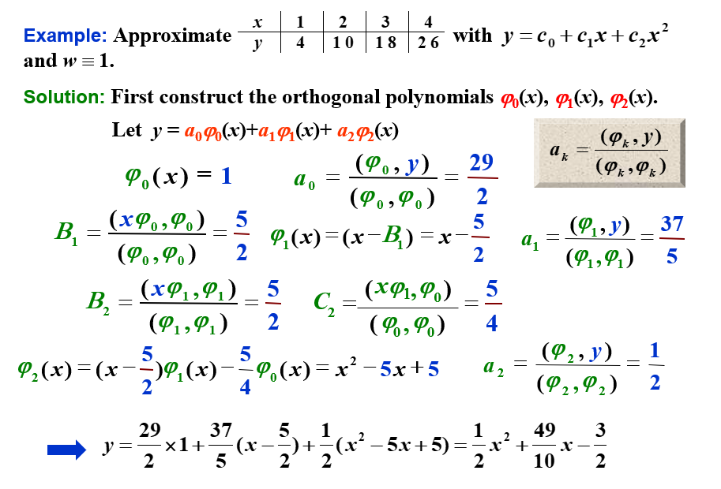
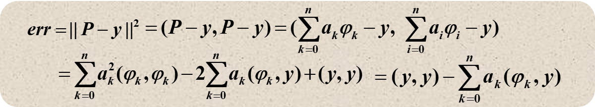
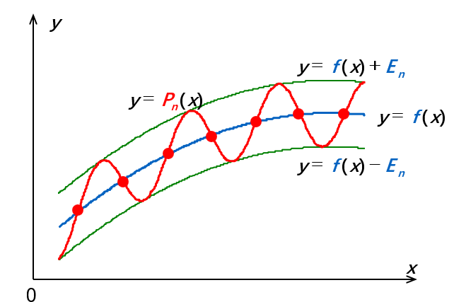
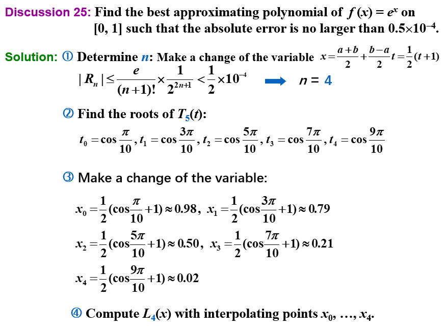
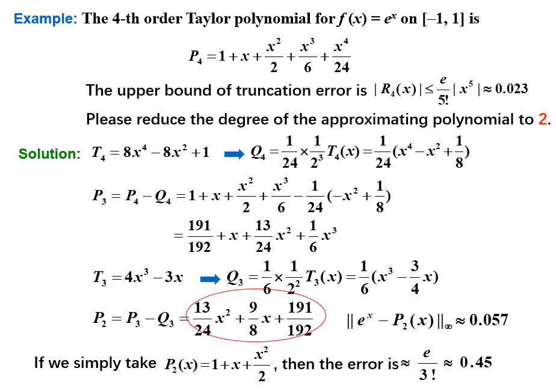

Chapter 8 逼近论 | Approximation Theory
逼近和插值的区别在于，插值是要求通过所有的数据点，而逼近则是通过部分数据点，但是要求逼近的函数和原函数的误差尽可能小。
8.1 Discrete Least Squares Approximation | 离散最小二乘逼近
误差表达
设 \(p(x)\) 是逼近函数，\(y_{i}\) 是给定的 \(n\) 个数据点，那么逼近误差的三种表达方式如下：
Minimax problem
\[E_\infty(p) = \max \{|y_i - f(x)|\}\]
这用初等技术是解决不了的
Absolute deviation
\[E_1(p) = \sum\limits_{i=1}^{n} |y_i - f(x)|\]
困难在于绝对值函数在零点不可微，可能无法求解多元函数的最小值。
Least squares
\[E_2(p) = \sum\limits_{i=1}^{n} (y_i - f(x))^2\]
此即为最小二乘的误差表达，也是最常用的逼近方法。
我们的目标是找到一个 \(p(x)\)，使得 \(E_2(p)\) 最小。
离散最小二乘逼近
定义： \(P_n(x)\) 是 \(m\) 个数据点的离散最小二乘逼近，如果 \(P_n(x)\) 是 \(n\) 次多项式，且满足
\[
p=\arg \min _{p \in \mathbb{P}_{n}} \sum\limits_{i=1}^{m}\left(y_{i}-p\left(x_{i}\right)\right)^{2}\]
其中 \(\mathbb{P}_{n}\) 是 \(n\) 次多项式的集合，\(n\) 应远远小于 \(m\)，如果 \(n=m-1\)，其即为 lagrange 插值。
离散最小二乘逼近的解
设 \(P_n(x) = a_0 + a_1 x + \cdots + a_n x^n= \sum\limits_{i=0}^{n} a_i x^i\)。
\[
\begin{aligned}
E_2&=\sum\limits_{i=1}^{m}\left(y_{i}-P_n\left(x_{i}\right)\right)^{2} \\
\end{aligned}
\]
为了使 \(E_2\) 最小，则其必要条件是
\[
\frac{\partial E_{2}}{\partial a_{k}}=0, \quad k=0,1, \cdots, n
\]
即
\[
\begin{aligned}
\frac{\partial E_{2}}{\partial a_{k}}&=2 \sum\limits_{i=1}^{m}\left(P_{n}\left(x_{i}\right)-y_{i}\right) \frac{\partial P_{n}\left(x_{i}\right)}{\partial a_{k}}\\
&=2 \sum\limits_{i=1}^{m}\left(\sum _{j=0}^{n} a_j x_i^j - y_i\right) x_i^k\\
&=2 \left(\sum\limits_{j=0}^{n} (a_j \sum\limits_{i=1}^{m} x_i^{j+k}) - \sum\limits_{i=1}^{m} y_i x_i^k \right)= 0
\end{aligned}
\]
即
\[
\sum\limits_{j=0}^{n} (a_{j} \sum\limits_{i=1}^{m} x_{i}^{j+k})=\sum\limits_{i=1}^{m} y_{i} x_{i}^{k}, \quad k=0,1, \cdots, n
\]
也就是
\[
\begin{bmatrix}
\sum\limits_{i=1}^{m} x_{i}^{0} & \sum\limits_{i=1}^{m} x_{i}^{1} & \cdots & \sum\limits_{i=1}^{m} x_{i}^{n} \\
\sum\limits_{i=1}^{m} x_{i}^{1} & \sum\limits_{i=1}^{m} x_{i}^{2} & \cdots & \sum\limits_{i=1}^{m} x_{i}^{n+1} \\
\vdots & \vdots & \ddots & \vdots \\
\sum\limits_{i=1}^{m} x_{i}^{n} & \sum\limits_{i=1}^{m} x_{i}^{n+1} & \cdots & \sum\limits_{i=1}^{m} x_{i}^{2 n}
\end{bmatrix}
\begin{bmatrix}
a_0\\
a_1\\
\vdots\\
a_n
\end{bmatrix}=
\begin{bmatrix}
\sum\limits_{i=1}^{m} y_{i} x_{i}^{0}\\
\sum\limits_{i=1}^{m} y_{i} x_{i}^{1}\\
\vdots\\
\sum\limits_{i=1}^{m} y_{i} x_{i}^{n}
\end{bmatrix}
\]
\(P(x)\) 线性
即 \(n=1\) 。此时，\(P_1(x) = a_0 + a_1 x\)，有
\[
\begin{bmatrix}
m & \sum\limits_{i=1}^{m} x_{i} \\
\sum\limits_{i=1}^{m} x_{i} & \sum\limits_{i=1}^{m} x_{i}^{2}
\end{bmatrix}
\begin{bmatrix}
a_0\\
a_1
\end{bmatrix}=
\begin{bmatrix}
\sum\limits_{i=1}^{m} y_{i}\\
\sum\limits_{i=1}^{m} y_{i} x_{i}
\end{bmatrix}
\]
所以
\[
\begin{cases}
a_0 = \frac{\sum\limits_{i=1}^{m} x_{i}^{2} \sum\limits_{i=1}^{m} y_{i}-\sum\limits_{i=1}^{m} x_{i} \sum\limits_{i=1}^{m} x_{i} y_{i}}{m \sum\limits_{i=1}^{m} x_{i}^{2}-\left(\sum\limits_{i=1}^{m} x_{i}\right)^{2}}\\
a_1 = \frac{m \sum\limits_{i=1}^{m} x_{i} y_{i}-\sum\limits_{i=1}^{m} x_{i} \sum\limits_{i=1}^{m} y_{i}}{m \sum\limits_{i=1}^{m} x_{i}^{2}-\left(\sum\limits_{i=1}^{m} x_{i}\right)^{2}}
\end{cases}
\]
\(P(x)=\frac{x}{ax+b}\)
令 \(Y_i = \frac{1}{y_i}\)，\(X_i = \frac{1}{x_i}\)，则可化为
\[
Y_i = a + bX_i
\]
线性最小二乘即可
\(P(x)=a e^{-b/x}\)
令 \(Y_i = \ln y_i\)，\(X_i = \frac{1}{x_i}\)，则可化为
\[
Y_i = \ln a - bX_i
\]
线性最小二乘即可。
8.2 Orthogonal Polynomials and Least Squares Approximation | 正交多项式与最小二乘逼近
刚刚是离散化的最小二乘逼近，现在是连续的最小二乘逼近。
给定定义在 \([a,b]\) 上的函数 \(f(x)\)，我们希望找到一个 简单的函数 \(p(x)\) 来逼近 \(f(x)\)，使得
\[
E = \int_{a}^{b}\left|f(x)-p(x)\right|^{2} d x
\]
最小。
广义多项式(Generalized Polynomial)：用线性无关的函数 \(\phi_0(x), \phi_1(x), \cdots, \phi_n(x)\) 的线性组合 \(P(x)=\sum\limits_{i=0}^{n} a_{i} \phi_{i}(x)\) 来逼近 \(f(x)\)，这里的 \(P(x)\) 称为广义多项式。
- Trigonometric polynomial: \(\phi_{i}(x)=\cos (i x)\) or \(\sin (i x)\)
- Exponential polynomial: \(\phi_{i}(x)=e^{k_i x}, k_i \neq k_j\)
- 记 \(\Pi_n(x)\) 为 阶数最多为 \(n\) 的多项式的集合，\(\Pi_n(x)\) 是一个线性空间，\(\Pi_n(x)\) 的基为 \(\{1, x, x^2, \cdots, x^n\}\)，可以拿来做广义多项式的基。
Weight Function | 权函数
离散的情况下，为了在某些点上分配不同程度的重要性，我们在计算离散最小二乘逼近的误差表达式时附上权重：
\[
E = \sum\limits_{i=1}^{m} w_i (y_i - p(x_i))^2
\]
连续的情况下，我们也可以引入权重函数 \(w(x)\)，使得
\[
E = \int_{a}^{b} w(x) \left|f(x)-p(x)\right|^{2} d x
\]
Inner Product and Norm | 内积与范数
我们定义内积为
\[
\langle f, g\rangle=
\begin{cases}
\sum\limits_{i=1}^{m} w_i f(x_i) g(x_i) & \text{离散}\\
\int_{a}^{b} w(x) f(x) g(x) d x & \text{连续}
\end{cases}
\]
如果 \(\langle f, g\rangle = 0\)，则称 \(f\) 和 \(g\) 正交。
我们定义范数为
\[
\|f\|=\sqrt{\langle f, f\rangle}
\]
所以我们可以把误差表达式写成
\[
E = \langle f-p, f-p\rangle=\|f-p\|^2
\]
寻找多项式的系数
设 \(P(x)=a_{0} \phi_{0}(x)+a_{1} \phi_{1}(x)+\cdots+a_{n} \phi_{n}(x)\)，与离散的情况类似，我们要使得 \(E\) 最小，即
\[
\begin{aligned}
\frac{\partial E}{\partial a_{k}}&=0\\
\frac{\partial (\int_{a}^{b} w(x) \left|\sum\limits_{i=0}^{n} a_{i} \phi_{i}(x)-f(x)\right|^{2} ) d x}{\partial a_{k}}&=0\\
\frac{\partial (\int_{a}^{b} w(x) ((\sum\limits_{i=0}^{n} a_{i} \phi_{i}(x))^2-2f(x)\sum\limits_{i=0}^{n} a_{i} \phi_{i}(x)+f(x)^2) )d x}{\partial a_{k}}&=0\\
\int_{a}^{b} w(x) (2\phi_{k}(x)\sum\limits_{i=0}^{n} a_{i} \phi_{i}(x)-2f(x)\phi_{k}(x)) d x&=0\\
\int_{a}^{b} w(x) \phi_{k}(x)\sum\limits_{i=0}^{n} a_{i} \phi_{i}(x) d x&=\int_{a}^{b} w(x)\phi_{k}(x)f(x) d x\\
\sum\limits_{i=0}^{n} a_{i} \int_{a}^{b} w(x) \phi_{k}(x)\phi_{i}(x) d x&=\int_{a}^{b} w(x) \phi_{k}(x)f(x) d x\\
\sum\limits_{i=0}^{n} a_{i} \langle \phi_{k}, \phi_{i}\rangle&=\langle \phi_{k},f\rangle\\
\end{aligned}
\]
写成矩阵形式即为
\[
\begin{bmatrix}
\langle \phi_{0}, \phi_{0}\rangle & \langle \phi_{0}, \phi_{1}\rangle & \cdots & \langle \phi_{0}, \phi_{n}\rangle \\
\langle \phi_{1}, \phi_{0}\rangle & \langle \phi_{1}, \phi_{1}\rangle & \cdots & \langle \phi_{1}, \phi_{n}\rangle \\
\vdots & \vdots & \ddots & \vdots \\
\langle \phi_{n}, \phi_{0}\rangle & \langle \phi_{n}, \phi_{1}\rangle & \cdots & \langle \phi_{n}, \phi_{n}\rangle
\end{bmatrix}
\begin{bmatrix}
a_0\\
a_1\\
\vdots\\
a_n
\end{bmatrix}=
\begin{bmatrix}
\langle \phi_{0},f\rangle\\
\langle \phi_{1},f\rangle\\
\vdots\\
\langle \phi_{n},f\rangle
\end{bmatrix}
\]
离散例子
可以证明，离散时的式子也是这样的。

构造正交多项式
由 \(H_{ij}^{(n)}=\frac{1}{i+j-1}\) 定义的 \(n\times n\) 的 Hilbert 矩阵是一个病态矩阵。在求解中往往因为舍入误差而导致结果不准确。
为了解决这个问题，我们可以通过正交化的方法来构造正交多项式，也就是让前文中提到的矩阵变成对角矩阵。这样就不需要进行求逆了。
此时的系数可以直接通过
\[
a_k = \frac{\langle \phi_{k},f\rangle}{\langle \phi_{k}, \phi_{k}\rangle}
\]
来计算。
我们可以构造出一系列的正交多项式。用下面定义的多项式函数集 \(\{\phi_{0}(x), \phi_{1}(x), \cdots, \phi_{n}(x)\}\) 关于权函数 \(w(x)\) 是正交的：
\[\phi_{0}(x)=1, \quad \phi_{1}(x)=x-B_{1}, \quad \phi_{k}(x)=(x-B_{k}) \phi_{k-1}(x)-C_{k} \phi_{k-2}(x), \quad k=2,3, \cdots\]
其中 \(B_k\) 和 \(C_k\) 是常数，可以通过
\[
B_{k}=\frac{\langle x \phi_{k-1}, \phi_{k-1}\rangle}{\langle \phi_{k-1}, \phi_{k-1}\rangle}, \quad C_{k}=\frac{\langle x\phi_{k-1}, \phi_{k-2}\rangle}{\langle \phi_{k-2}, \phi_{k-2}\rangle}
\]
来计算。
题目例子

里面各项已经在之前的图片中计算过了。
伪代码

其中误差的计算推导如下：

8.3 Chebyshev Polynomials and Economization of Power Series | 切比雪夫多项式与幂级数的缩减
Chebyshev Polynomials | 切比雪夫多项式
Target 1
上文我们知道了误差的计算方式，现在我们试图找到一个 \(n\) 阶多项式 \(P_n\) 来逼近函数，使得误差 \(\|P_n-f\|\) 最小。
若 \(P(x_0)-f(x_0)=\pm \|P_n-f\|\) ，则定义点 \(x_0\) 为 Deviation point
我们的多项式 \(P_n\) 有如下性质：
- 如果 \(f\in C[a,b]\)，且 \(f\) 不是 \(n\) 阶多项式，则存在唯一的多项式 \(P_n\) 使得 \(||P_n-f||_\infty\) 最小
- \(P_n(x)\) 存在，且必须有正负偏差点，否则肯定还有更好的逼近函数
-
（切比雪夫定理）\(P_n(x)\) 最小化 \(||P_n-f||_\infty\) \(\Leftrightarrow\) \(P_n(x)\) 至少有 \(n+2\) 个正负偏差点。也就是说，存在一组点 \(a \leq t_1 < \cdots < t_{n+2} \leq b\)，使得
\[P_n(t_k) - f(t_k) = \pm (-1)^k ||P_n-f||_\infty\]
这组点 \(\{t_k\}\) 被称为切比雪夫交替序列(Chebyshev alternating sequence)。

Target 2.0
决定插值点 \(\{x_0, \cdots, x_n\}\) 使得 \(P_n(x)\) 最小化余项。余项为：
\[|P_n(x)-f(x)|=|R_n(x)|=\left|\frac{f^{(n+1)}(\xi)}{(n+1)!}\prod_{i=0}^n(x-x_i)\right|\]
Target 2.1
找到插值点 \(\{x_1, \cdots, x_n\}\) 使得 \(||w_n||_\infty\) 在 \([-1,1]\)上最小化，其中 \(w_n(x)=\prod\limits_{i=1}^n(x-x_i)\)
注意到
\[w_n(x)=x^n-P_{n-1}(x)\]
这里的 \(P_{n-1}(x)\) 是 \(n-1\) 阶多项式，和上文的 \(P_n(x)\) 不是一个东西，此语境下没有关联。
Target 3.0
问题转化为找到 \(x_1, \cdots, x_n\) 使得 \(||x^n-P_{n-1}(x)||_\infty\) 在 \([-1,1]\)上最小化。
从切比雪夫定理我们知道，\(P_{n-1}(x)\) 相对于 \(x_n\) 有 \(n+1\) 个偏差点，也就是说，\(w_n(x)\) 在 \(n+1\) 个点上交替取得最大值和最小值。
引入Chebyshev Polynomials
为了实现上面的目标，我们先想到三角函数。\(cos(n\theta)\) 在 \([-1,1]\) 上有 \(n+1\) 个交替的最大值和最小值，但是 \(cos(n\theta)\) 不是多项式。
又由于 \(cos(n\theta)\) 可以表示为 \(\sum\limits_{k=0}^{n} a_k (\cos\theta)^k\)，这就是我们想要的多项式形式。
令 \(x=\cos\theta\)，则 \(x \in [-1,1]\)，所以我们可以把 \(cos(n\theta)\) 写成 \(T_n(x)\) 的形式，\(T_n(x)\) 称为切比雪夫多项式(Chebyshev polynomial)。
\[
T_{n}(x)=\cos (n \cdot \arccos x)
\]
切比雪夫多项式的性质：
- 当 \(x=\cos\frac{k\pi}{n}\) 时，\(T_n(x)\) 取到极值 \((-1)^k\)
我们也可以用递推公式来定义切比雪夫多项式：
\[
\begin{aligned}
T_{0}(x)&=1\\
T_{1}(x)&=x\\
T_{n}(x)&=2 x T_{n-1}(x)-T_{n-2}(x), \quad n=2,3, \cdots
\end{aligned}
\]
可以得出性质：
- 最高阶项的系数为 \(2^{n-1}\)
- 在\([0,1]\)上，\(T_0(x), T_1(x), \cdots, T_n(x)\) 关于权函数 \(\frac{1}{\sqrt{1-x^2}}\) 正交
通过计算得出
\[\langle T_{n}, T_{m}\rangle= \int _{-1}^{1} \frac{T_{n}(x) T_{m}(x)}{\sqrt{1-x^{2}}} d x=\left\{\begin{array}{ll}{\pi} & {n=m=0} \\ {\frac{\pi}{2}} & {n=m \neq 0} \\ {0} & {n \neq m}\end{array}\right.\]
回到 Target 3.0
我们可以把 \(w_n\) 写成 \(T_n(x)\) 的形式：
\[
w_{n}(x)=x^{n}-P_{n-1}(x)=\frac{T_{n}(x)}{2^{n-1}}
\]
称之为首一切比雪夫多项式(The monic Chebyshev polynomial)。
可以证明，首一切比雪夫多项式是所有首一多项式中，最小化 \(||w_n||_\infty\) 的多项式。
回到 Target 2.1
我们将 \(w_n\) 写成 \(T_n(x)\) 的形式：
\[
\min_{w_n\in \tilde\Pi_n} \|w_{n}\|_{\infty}=\big\|\frac{T_{n}(x)}{2^{n-1}}\big\|_{\infty}=\frac{1}{2^{n-1}}
\]
这里的 \(\tilde\Pi_n\) 是所有首一多项式的集合。
所以，我们取的插值点即为 \(T_n(x)\) 的 \(n\) 个零点
回到 Target 2.0
在 $[-1,1] 上选取的插值点为 \(T_n(x)\) 的 \(n\) 个零点，能够使得余项最小，其上确界为
\[
\max _{x \in[-1,1]}\left|f(x)-P_{n}(x)\right| \leq \frac{1}{2^{n}(n+1) !} \max _{x \in[-1,1]}\left|f^{(n+1)}(x)\right|
\]
使用线性变换 \(x=\frac{b-a}{2} t+\frac{b+a}{2}\)，我们可以将其推广到闭区间 \([a,b]\) 上。
例题

Economization of Power Series | 幂级数的缩减
考虑到，用一个 \(n\) 阶多项式 \(P_n(x) = a_n x^n + a_{n-1} x^{n-1} + \cdots + a_1 x + a_0\) 来逼近一个任意的 \(n\) 阶多项式 \(P_n(x)\)，我们可以通过去掉 \(P_n(x)\) 中的 含 \(a_n x^n\) 项的 \(n\) 阶多项式 \(Q_n(x)\) 来逼近 \(P_n(x)\)，那么
\[
\begin{aligned}
\max _{x \in[-1,1]}\left|f(x)-P_{n-1}(x)\right| &\leq \max _{x \in[-1,1]}\left|f(x)-P_{n}(x)\right|+\max _{x \in[-1,1]}\left|Q_{n}(x)\right|+\max _{x \in[-1,1]}\left|P_{n}(x)-P_{n-1}(x)-Q_{n}(x)\right|\\
&\leq \max _{x \in[-1,1]}\left|f(x)-P_{n}(x)\right|+\max _{x \in[-1,1]}\left|Q_{n}(x)\right|
\end{aligned}
\]
为了使得精确度的损失最小， \(Q_n(x)\) 必须为 \(\(a_n \cdot \frac{T_n(x)}{2^{n-1}}\)\)
例题

最后更新:
2023年12月2日 16:57:28
创建日期:
2023年11月28日 12:27:04